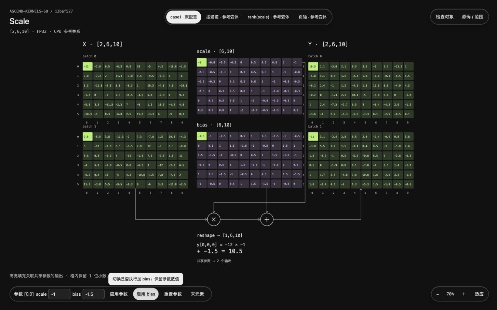
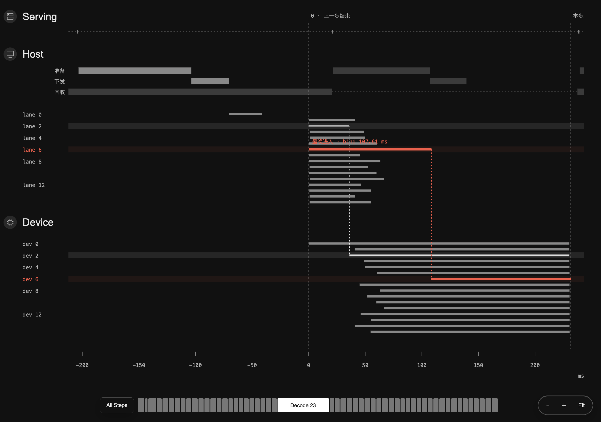
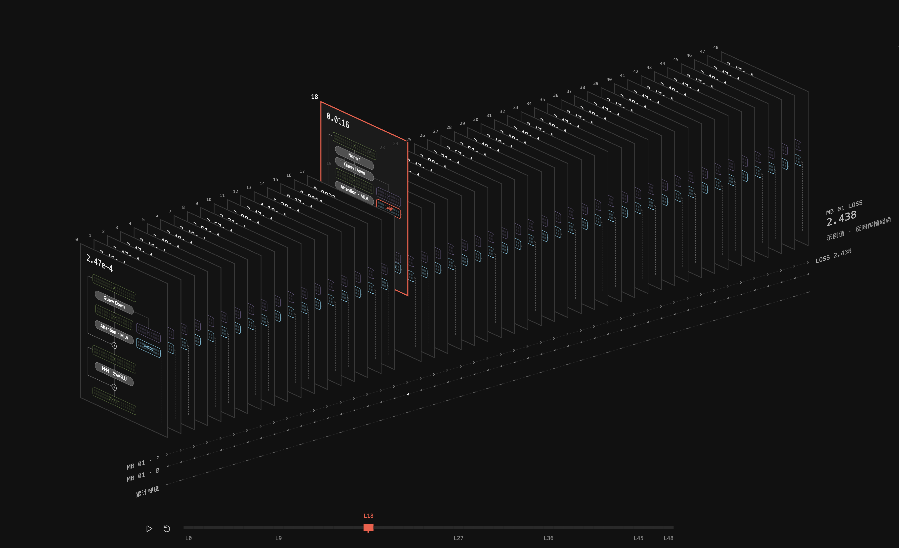

Agent 执行过程冗长，结果与异常难定位
问题 / 结果驱动
从结果与 Checkpoint
发现问题，再进入调查
检查结果正确性 · 性能 · 验证状态
关键检查点保留证据与异常信号
按需回溯从问题定位到相关过程
检查结果
关注 Checkpoint
按问题回溯
面向 Agent 开发流程，让关键证据可理解、判断可检验、人的介入有效。

Evidence Contract / P0–P2 / Outcome Evaluation
复用稳定规则，保留场景差异；由问题选择表达，由证据约束判断。

图元角色、形态与颜色语义 Pattern对象关系、选择与联动
Pattern对象关系、选择与联动

